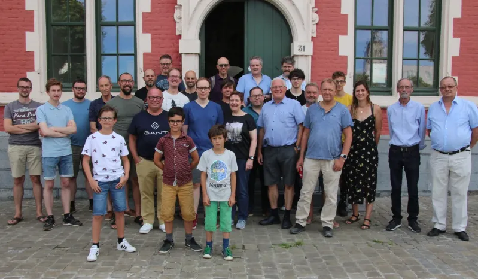
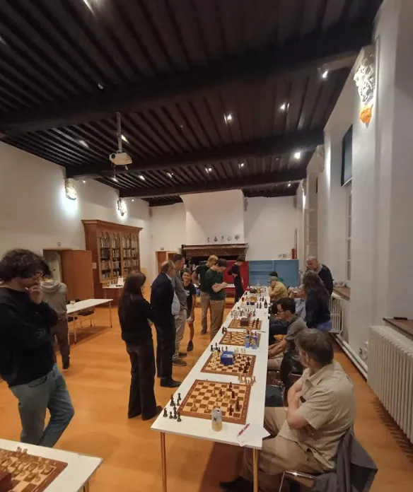

Welkom bij Hanske De Schaker!
Schaakclub Hanske De Schaker is dé schaakclub van Oudenaarde. Een gezellige, volkse vereniging voor iedereen met een passie voor schaken. Jarenlang brengt onze club schakers uit Oudenaarde, maar ook uit Ronse, Kluisbergen, Kwaremont, Zingem, Spiere en zelfs Wetteren. Beginners, gevorderden of passionata: iedereen is welkom bij Hanske De Schaker. We komen bijna elke vrijdagavond samen om 20.30 uur voor een schaakavond. Deze vinden plaats in de cafézaal van Abdij Maagdendale in Oudenaarde.

